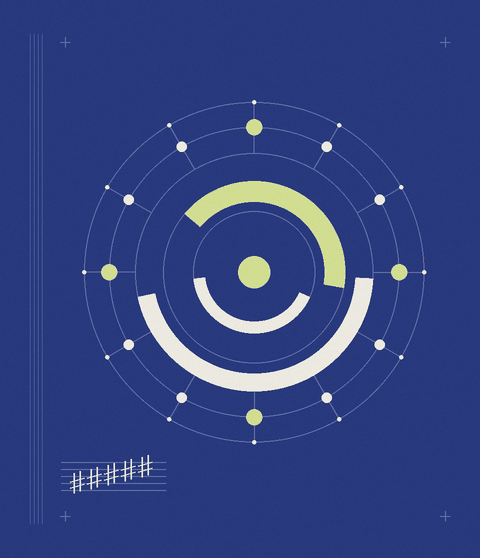

全部教材
设置
主题配色
纸白
米浆
雾蓝
淡紫
烟粉
薄荷
琥珀
石墨
午夜蓝

基本乐理教程
从音符时值、节拍和音高读起，逐步学习音程、调式、和弦与演奏记号。
从第一章开始
→
本书程序谱
→
读谱基础
第一章
音的长短
第二章
节奏与节拍
第三章
音的高低
第四章
音程
调式与和声
第五章
调式、大调式
第六章
小调式、平行调
第七章
民族调式、中古调式
第八章
和弦
第九章
调的关系
第十章
调的转换
第十一章
调式变音与半音阶
演奏与记谱
第十二章
速度、力度与演奏法记号
第十三章
装饰音与略写记号
乐理专题
第十四章
近现代乐理知识
第十五章
中国古代乐理知识
第十六章
律学常识